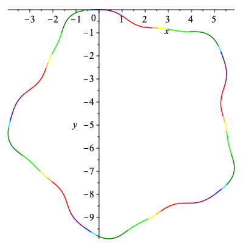

Curves with different order of smoothness
Set up Procedure
A procedure used several times that returns an approximation of a curve with curvature k using h points.
| > | CurveApprox := proc(k,h,a,b)
description "input curvature of a curve - k; number of partitions in the approximation - h; and starting / ending points - a, b; outputs (h+1)x2 array giving x and y components of original curve"; local i, d, Kt, C; d := (b-a)/h; Kt := Array(1..h+1); C := Array(1..h+1,1..2); Kt[1] := 0; C[1,1] := 0; C[1,2] := 0; for i from 2 to h+1 do; Kt[i] := Kt[i-1] + d/2 * (evalf(eval(k,s=d*(i-2)+a)) + evalf(eval(k,s=d*(i-1)+a))); C[i,1] := C[i-1,1] + d/2 * (evalf(cos(Kt[i-1])) + evalf(cos(Kt[i]))); C[i,2] := C[i-1,2] + d/2 * (evalf(sin(Kt[i-1])) + evalf(sin(Kt[i]))); end do; return C; end proc: |
Construct Curvature For Original Curve
First we will construct the original curve used in Musso and Nicolodi's paper with curvature κ = 1/2 (sin(s)-cos(3s)) - 1/5 and examine the signature.
We will approximate the curve here with 1500 points.
| > | pts := 1500: |
| > | k := 1/2*(sin(s) - cos(3*s))-1/5:
kp := diff(k,s): |
| > | C := CurveApprox(k,pts,0,10*Pi):
plots[display](Array([plot(C[1..-1,1],C[1..-1,2]),plot(k,s=0..2*Pi,labels=[s,kappa])])); plot([k,diff(k,s),s=0..2*Pi]); |
|
||
Find Points of Signature Intersection
We will numerically approximate pre-images of self-intersection points of the signature under the signature map using the curvature function as a guide for the starting points for fsolve.
| > | kt := eval(k,s=t): |
| > | kpt := eval(kp,s=t): |
| > | s16 := fsolve({k=kt,kp=kpt},{s=0.2,t=4.9}): |
| > | s25 := fsolve({k=kt,kp=kpt},{s=1.7,t=3.3}): |
| > | s38 := fsolve({k=kt,kp=kpt},{s=2.0,t=5.6}): |
| > | s47 := fsolve({k=kt,kp=kpt},{s=2.5,t=4.8}): |
The eight points that correspond to self-intersections of the signature map are ordered here.
| > | s1, s2, s3, s4 := rhs(s16[1]), rhs(s25[1]), rhs(s38[1]), rhs(s47[1]): |
| > | s5, s6, s7, s8 := rhs(s25[2]), rhs(s16[2]), rhs(s47[2]), rhs(s38[2]): |
Construct New Curvature
Now we can illustrate which parts of the curvature and curve correspond to subsets of the signature curve via color.
Our intervals associated with each edge and color can be read directly below.
| > | sig1 := plot([k,kp,s=s1..s2],color="Red",thickness=3):
sig2 := plot([k,kp,s=s2..s3],color="Orange",thickness=3): sig3 := plot([k,kp,s=s3..s4],color="Yellow",thickness=3): sig4 := plot([k,kp,s=s4..s5],color="Lime",thickness=3): sig5 := plot([k,kp,s=s5..s6],color="Green",thickness=3): sig6 := plot([k,kp,s=s6..s7],color="Cyan",thickness=3): sig7 := plot([k,kp,s=s7..s8],color="Blue",thickness=3): sig8 := plot([k,kp,s=s8..2*Pi+s1],color="Purple",thickness=3): plots[display](sig1,sig2,sig3,sig4,sig5,sig6,sig7,sig8); |
|  |
To each edge in our signature graph we can associate a color, the end points of it's associated interval, and how many points we should use to approximate it earlier. Here we will use the integer closest to (length of interval * 1500)/(10π) to approximate the number of points where 1500 points were used to approximate the initial curve, and the length of the initial curve was 10π.
| > | eCol := table([a="Green",b="Purple",c="Cyan",d="Yellow",e="Blue",f="Orange",g="Lime",h="Red"]):
eInt := table([a=[s5,s6],b=[s8,s1+2*Pi],c=[s6,s7],d=[s3,s4],e=[s7,s8],f=[s2,s3],g=[s4,s5],h=[s1,s2]]): ePts := table([a=round((s6-s5)*pts/(10*Pi)),b=round((s1+2*Pi-s8)*pts/(10*Pi)),c=round((s7-s6)*pts/(10*Pi)),d=round((s4-s3)*pts/(10*Pi)),e=round((s8-s7)*pts/(10*Pi)),f=round((s3-s2)*pts/(10*Pi)),g=round((s5-s4)*pts/(10*Pi)),h=round((s2-s1)*pts/(10*Pi))]): |
The procedure below takes a list that gives the desired path on the signature graph, the number of times that path is repeated, and a curvature function that gives the Euclidean signature used to obtain the signature graph. The output will be the new curvature function, an array that approximates the new curve, and colored plots of both.
| > | New_Curve := proc(L,m,k)
description "input a list of letters making up a word of minimal period, m: the number of times the minimal word appears, and a curvature function for a curve with the signature, outputs the curvature, and a plot of both the curve and curvature"; local pts, C, C_pts, kw_period, kw, kw_plot, Cw, Cw_plot, i; pts := 0; for i from 1 to nops(L) do: pts := pts + ePts[L[i]]*m; end do: C := [s<=0,0]; for i from 1 to nops(L) do: C := [op(C),s<=(eInt[L[i]][2]-eInt[L[i]][1]+rhs(C[2*i-1])),eval(k,s=s+eInt[L[i]][1]-rhs(C[2*i-1]))]; end do: C_pts := [1]; for i from 1 to nops(L)*m do: C_pts := [op(C_pts), C_pts[i]+ePts[L[(i-1) mod nops(L) + 1]]]; end do: kw_period := piecewise(op(C[3..-1])); kw := eval(kw_period,s=s-rhs(C[2*nops(L)+1])*floor(s/rhs(C[2*nops(L)+1]))); kw_plot := seq(plot(kw,s=rhs(C[2*i-1])..rhs(C[2*i+1]),color=eCol[L[i]]),i=1..nops(L)); Cw := CurveApprox(kw,pts,0,m*rhs(C[2*nops(L)+1])); Cw_plot := seq(plot(Cw(C_pts[i]..C_pts[i+1],1),Cw(C_pts[i]..C_pts[i+1],2),color=eCol[L[(i-1) mod nops(L)+1]]),i=1..m*nops(L)); return kw, Cw, [kw_plot], [Cw_plot]; end proc: |
Original Curves
Through an analysis of the signature graph, we see there are only five admissible paths given below.
| > | C1 := New_Curve([b,h,f,d,g,a,c,e],5,k): plots[display](Array([plots[display](C1[3]),plots[display](C1[4])])); |
|
|
| > | C2 := New_Curve([b,h,a,c,e,d,g,f],5,k):
plots[display](Array([plots[display](C2[3]),plots[display](C2[4])])); |
|

| > | C3 := New_Curve([b,h,a,c,g,f,d,e],5,k):
plots[display](Array([plots[display](C3[3]),plots[display](C3[4])])); |
|
| > | C4 := New_Curve([b,c,e,d,g,a,h,f],5,k):
plots[display](Array([plots[display](C4[3]),plots[display](C4[4])])); |
|

| > | C5 := New_Curve([b,c,g,a,h,f,d,e],5,k):
plots[display](Array([plots[display](C5[3]),plots[display](C5[4])])); |
|
An animation
Below an animation is created showing how the signature curve is traversed by the first and second curve in the collection above. The curves being traced are simply copied over from above.
| > | ballB:= proc(x,y) plots[pointplot]([[x,y]],color=blue,symbol=solidcircle,symbolsize=40) end proc: |
| > | ballO:= proc(x,y) plots[pointplot]([[x,y]],color=orange,symbol=solidcircle,symbolsize=40) end proc: |
| > | ballBO:= proc(x,y,w,z) plots[pointplot]([[w,z],[x,y]],color=[orange,blue],symbol=solidcircle,symbolsize=40) end proc: |
| > | C1_ball := []: C2_ball:=[]:
frames := 60*5: res := 1500/frames: for i from 1 to frames do; C1_ball := [op(C1_ball),ballB(C1[2][ceil(i*res),1],C1[2][ceil(i*res),2])]: C2_ball := [op(C2_ball),ballO(C2[2][ceil(i*res),1],C2[2][ceil(i*res),2])]: od: |
| > | sig_ball := []:
frames := 60*5: res := 2*Pi/(59.8): for i from 0 to frames do; sig_ball := [op(sig_ball),ballBO(eval(C1[1],s=i*res+.01),eval(diff(C1[1],s),s=i*res+.01),eval(C2[1],s=i*res+.01),eval(diff(C2[1],s),s=i*res+.01))]: od: |
| > | S1 := [seq(plots[display](Array([C1_ball[i],sig_ball[i],C2_ball[i]])),i=1..frames)]: |
| > | plots[display](S1,insequence); |
|